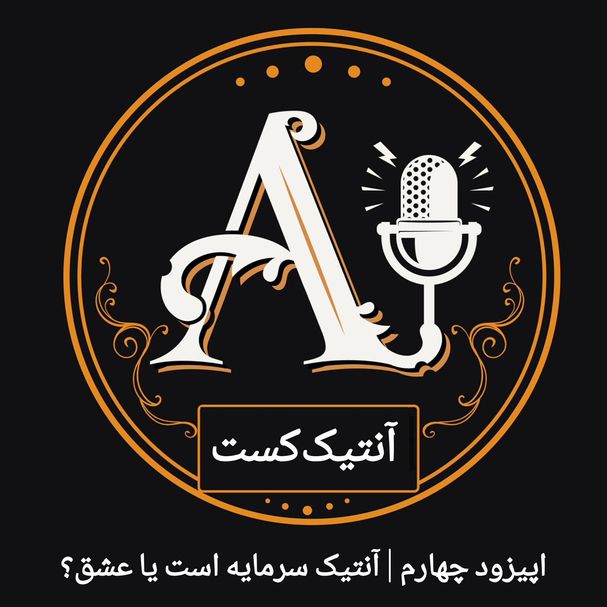

آنتیک و اخلاق
دنیای آنتیک فقط درباره قدمت، زیبایی و ارزش یک شیء نیست. گاهی در مسیر خرید، فروش و نگهداری یک شیء، با انتخابهایی روبهرو میشویم که یک سؤال مهم را پیش میکشند: مرز میان سود و اخلاق کجاست؟

درباره این قسمت
وقتی درباره اشیای آنتیک صحبت میکنیم، فقط با یک کالای قدیمی روبهرو نیستیم. هر شیء میتواند تاریخ، مالکیت، خاطره و داستانی داشته باشد که بخشی از ارزش واقعی آن است.
در این قسمت سراغ موقعیتهایی میرویم که اخلاق وارد دنیای آنتیک میشود؛ موقعیتهایی که ممکن است انتخاب درست، همیشه همان انتخابی نباشد که بیشترین سود را دارد.
در این قسمت میشنوید
درباره مسئولیت خریدار و فروشنده، صداقت در معرفی یک شیء، احترام به تاریخچه و میراث فرهنگی، و انتخابهای اخلاقی در دنیای آنتیک صحبت میکنیم.